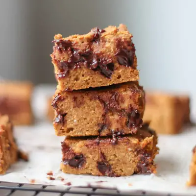

Healthy Pumpkin Oatmeal Bars

Ingredients
- 2 cups (200g) rolled oats
- 1 cup (200g) cooked red lentils (or swap with 1/2 cup oats)
- 2 teaspoons pumpkin pie spice
- 1 teaspoon cinnamon
- 1 teaspoon baking powder
- 2 tablespoons ground flaxseeds (or 2 eggs)
- 1 cup (230g) canned pumpkin
- 1 cup whole fat milk
- 1/4 cup (55g) unsweetened applesauce
- 1/4 cup maple syrup
- 1 teaspoon vanilla extract
- 3-4 soft medjool dates
- 1/3 cup (40g) finely chopped pecans
- 1/3-1/2 cup chocolate chips
Steps
- Preheat oven to 350 degrees Fahrenheit. Line a 9x9 inch baking pan with parchment paper for easy removal. Set aside.
- Pulse the oats in a food processor/blender until it turns into flour. Pour into a large bowl and combine with pumpkin pie spice, cinnamon, baking powder, and ground flaxseeds.
- Add cooked lentils (cooled), pumpkin, milk, applesauce, and vanilla extract into the food processor/blender and process until smooth.
- Pour into the bowl with the oatmeal mixture. Do not overmix. Fold in pecans and chocolate chips if using.
- Pour the batter into baking pan. Bake 20-25 minutes until the center is set and the inserted toothpick comes out clean.
- Allow for it cool in the pan for about 10 minutes before transferring to a cooling rack. COOL COMPLETELY before slicing.
Recipe by Min Kwon · Kidfriendly Meals, from MJ and Hungryman. Saved here for personal use; the original has the full notes, tips and photos. Open original